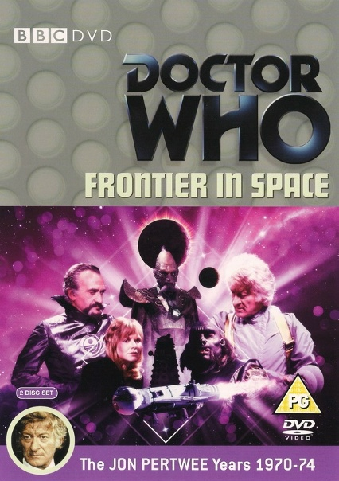

Эра Третьего Доктора (10 сезон)
<<< НАЗАД ||| 3. Граница в космосе ||| ДАЛЬШЕ >>>
Субтитры: Русские и Английские |  |
|---|---|
с обновлением визуальных эффектов (cunningmunki) Субтитры: отсутствуют | |
Дата выхода: 24 февраля - 31 марта 1973
Формат: 6 эпизодов по 25 мин.
| Все эпизоды сохранились в цвете (видеокассета PAL 2") |
|---|
 |
ТАРДИС попадает на борт земного грузового корабля в 2540 году — его атакуют, и команда видит в нападающих драконианцев, извечных соперников Земной империи. Но Доктор и Джо видят огронов — туповатых обезьяноподобных наёмников. Мастер с помощью гипнотического устройства стравливает две империи, провоцируя войну, а за ним стоят далеки, ждущие ослабления обеих сторон. Последняя серия Роджера Дельгадо в роли Мастера — актёр погиб в автокатастрофе через три месяца после эфира. История заканчивается клиффхэнгером и перетекает прямо в следующую серию — «Планету далеков».
VHS - август 1995 |   DVD+Boxset - 5 октября 2009 | Blu-ray (обновленный сезон) - 8 июля 2019 * Версия в нашей группе |
|---|


Трейлер: